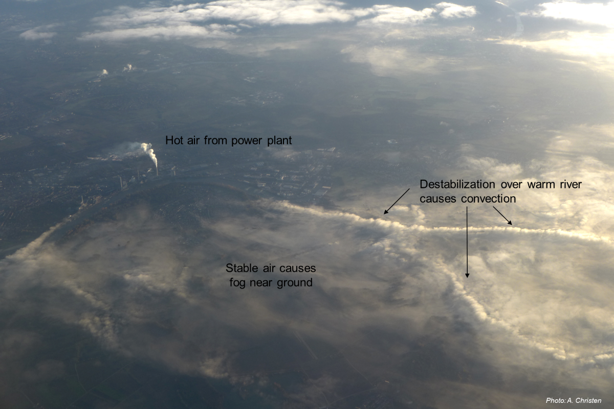

How does stability impact surface-atmosphere fluxes?
Learning objectives
Explain the difference between static stability vs. dynamic stability in the ABL.
Explain how we can we quantify dynamic stability in the ABL.
Understand the implications on eddy size and shape.

Atmospheric Temperatures
Absolute temperatures in the atmosphere at different times/locations are not directly comparable to one another. We can account for adiabatic processes using the potential temperature (\(\theta\)) and latent energy using the virtual temperature \(T_v\):
\[
\theta = T_z + DALR z
\qquad(1)\]
where \(T_z\) is the absolute temperature at height \(z\) and the Dry Adiabatic Lapse Rate (\(DALR = 0.01 K / m^{-1}\))
\[
T_v = (1 + 0.61 r_v - r_l) T
\qquad(2)\]
where \(T\) is the absolute temperature, \(r_v\) is the mixing ratio of water vapor in mol/mol, and \(r_l\) is is the mixing ratio of liquid water in mol/mol. Note\(r_l = 0\), unless the atmosphere is saturated.
Substituting \(\theta\) from Equation 1 in for \(T\) in Equation 2, gives virtual potential temperature (\(\theta_v\)), which will correct for both moisture and pressure differentials between two temperature observations.
Atmospheric Temperatures
class Temp_Corrections:# Inputs: # Required: T (temp in K), r_v (water vapor mixing ratio in mol/mol), z (height in m)# Optional: r_l (mixing ratio of liquid water in mol/mol), z_reff (reference height in m) def__init__(self,T,r_v,z,r_l=0,z_reff=0):self.T,self.r_v,self.z = T,r_v,zself.r_l,self.z_reff=r_l,z_reff # Will be given defaults unless other are providedself.Potential_Temp()self.Virtual_Temp()self.Compare()def Potential_Temp(self): DALR =0.01self.Theta =self.T+DALR*(self.z-self.z_reff)def Virtual_Temp(self):self.T_v = (1+0.61*self.r_v -self.r_l) *self.Tself.theta_v = (1+0.61*self.r_v -self.r_l) *self.Thetadef Compare(self):print(f'Absolute Temp: {self.T:.2f}, Potential Temp: {self.Theta:.2f}, Virtual Temp: {self.T_v:.2f}, Virual Potential Temp: {self.theta_v:.2f}')# Dry 10 deg C air at surfaceT_0 = Temp_Corrections(T=283.15,r_v=0,z=0)
\(g\) is the acceleration due to gravity (\(\approx \ 9.8 \ \rm{m \ s}^{-2}\))
Turbulence Production and Suppression
Mechanical production can be only zero or positive - wind increases with height is linked to momentum transfer in opposite direction.
Thermal production can be zero, positive or negative.
A negative thermal production means turbulence suppression, in this case the sensible heat flux cools the atmosphere, increases density, and prevents vertical mixing.
Mechanical vs. Thermal Turbulence
Mechanical vs. Thermal Turbulence
In Steady State, the total amount of TKE per unit mass is proportional to the local production from both mechanical and thermal TKE production rates
Where will we see no turbulence? (iClicker)
A: A
B: B
C: C
D: B & C
E: A, B & C
Flux Richardson Number (Rf)
Ratio of the two components gives relative strength of thermal and mechanical production in a flow, expressed by the Flux Richardson number (Rf):
Table 1: The Flux Richardson number (Rf) is a non-dimensional number that indicate the relative ratio of processes in the production or suppression of turbulence
Rf or Ri
Turbulence regime
Rf < -1/3
free convection
-1/3 < Rf < 1/3
forced convection
1/3 < Rf < 1
stably stratified turbulence (SST)
Rf > 1
no turbulence, only waves
Turbulence regimes in graph of production / suppression
Monin-Obukhov Similarity Theory
\(Rf\) has the disadvantage that it is a function of \(z\) in the ABL. So we are interested in another stability parameter which is not; the “global” dimensionless stability parameter \(\zeta\):
Because both friction velocity \(u_*\) and sensible heat flux \(H\) are roughly constant with height near the surface, \(L\) is also invariant with height.
Interpretation of the Obukhov-Length
Very close to the surface, mechanical production (M) dominates. In the upper ABL typically thermal production dominates (T) because wind shear (\(\Delta u/ \Delta z\)) decreases more rapidly with height than the sensible heat flux (\(w^{\prime}T^{\prime}\)). So there must be a height where M = T.
\(L\) can be physically interpreted as the inverse of the height above ground where the mechanical and thermal production are equal, in non-neutral conditions.
The sign of \(L\) is given by that of \(H\) and it is related to \(Rf\)
Summary of Stability Parameters
Effect on Eddy Size & Shape
Effect on Eddy Size & Shape
Stability Effects on Profiles and Fluxes
In the neutral case we envisaged eddies as spherical (diameter given by mixing length, \(l = k z\)) and rotating and tangential velocity: \(w^{\prime} = u^{\prime} = u_* = l\frac{\Delta\bar{u}}{\Delta z}\)
Buoyancy can enhance or diminish vertical motion, so:
\(w^{\prime} = u^{\prime} \pm \rm{buoyancy}\)
Where \(u^{\prime} = l\frac{\Delta\bar{u}}{\Delta z}\) but now \(l\neq k z\)
Dispersion of plumes over an industrial area
Photo: A. Christen
Why is σw/u* of importance?
Modification of the wind profile with changing stability
Stability effects on wind profile
We need a way of ‘correcting’ the neutral form of the wind profile law to include non-neutral situations:
Experimentation across multiple sites allowed us to test the empirical function to approximate \(\Phi_M\). The empirical estimate of \(\Phi_M\) breaks down under strongly unstable conditions.
This example shows data from the same tower you used in assignment #3
Numerical Integration of Wind Profile
To calculate wind at any height z under diabatic conditions, you must numerically integrate over finite layers, adjusting \(\zeta=z/L\) as you move up (or down).
import numpy as npdef get_Phi_M(zeta): Phi_M = np.ones(zeta.shape)# Stable/Neutral Phi_M[zeta>0] =1+4.7* zeta[zeta>0]# Unstable Phi_M[zeta<0] = (1-15* zeta[zeta<0])**-0.25return (Phi_M)def integrate_profile(L,u_star,z0,z,step_size =0.001): k =0.41# Create an array of Z values at "step_size" resolution Z = np.arange(z0,z,step_size)# Calculate stability parameter zeta = Z/L# Get zeta values Phi_M = get_Phi_M(zeta)# Get slope wind profile at each z dubar_dz = u_star/(k*Z)*Phi_M# Integrate by step, starting at z0 where u_bar = 0 u_bar = np.cumsum(dubar_dz*step_size)-(dubar_dz[0]*step_size)return(Z,u_bar)L =-10u_star =0.2z0 =0.02z =20Z,u_bar = integrate_profile(L,u_star,z0,z)print(Z[-1],u_bar[-1])
19.999000000000017 2.650378708658456
Visualizing the Profile
import matplotlib.pyplot as pltplt.figure()plt.plot(u_bar,Z)plt.ylabel('Height (m)')plt.xlabel('Mean Wind Speed (m s-1)')plt.show()
Practical Applications?
Estimating wind under all conditions is relevant in the wind energy industry (Photo: A. Christen)
Wind Power Generation
We can estimate the power generation \(U\) (in W) by a wind turbine using the following equation:
\[
U = \frac{\pi}{2}\rho E R^2 \bar{u}^3
\qquad(10)\]
Where \(R\) is the radius of the turbine (in m), \(E\) is the turbine efficiency (usually ~ 30 - 45%), and \(\bar{u}\) is the mean wind speed at the height of the turbine.
Stull R. B. (2015): Practical Meteorology
Example 1
Estimate the power generation of a turbine with \(R\) = 30m, \(z\) = 80m and \(E\) = 40% under the following conditions: Neutral stability, \(u_*\) = 0.5 m/s, \(z_0\) = 0.02 m, \(\rho\) = 1.22 kg m-3:
import numpy as npk =0.41R =30# mE =0.40# %z =80# mz0 =0.02# mu_star =0.5# m/srho =1.22# kg m-3u_bar = u_star/k *np.log(z/z0)U = np.pi/2*rho*E*(R**2)*(u_bar**3)print(f'{U*1e-3:.1f} kW')
713.9 kW
Example 2
Estimate the power generation of the same turbine if all conditions are the same, except: Unstable (L = -2):
import numpy as npz0 =0.02# mu_star =0.5# m/srho =1.22# kg m-3L =-2# Get integrated profileZ,u_bar = integrate_profile(L,u_star,z0,z)# Estiamte U for U = np.pi/2*rho*E*(R**2)*(u_bar[-1]**3)print(f'{U*1e-3:.1f} kW')
134.2 kW
How do we interpret this? (iClicker)
A: All else equal unstable conditions enhance wind power generation
B: All else equal unstable conditions inhibit wind power generation
C: Not enough information to know?
How did power generation compare between the two conditions?
Wind Energy vs. Sensible Heat Flux
Estimate the power generation (kW) of the same turbine
Take home points
Dynamic stability parameters describe ratio of thermal turbulence production to (minus) mechanical turbulence production.
Dimensionless flux and gradient Richardson numbers are commonly used to describe the atmosphere’s dynamic stability and the turbulence regime.
Monin-Okukhov similarity theory (MOST) is using four variables controlling turbulence, u*, w’T’, g and T and derives a stability length L (called the Obukhov length)
Dynamic stability controls the eddy spectrum and eddy shape.
Under non-neutral (diabatic) conditions, the mixing length changes, and so does the vertical extent of eddies.
As a consequence the wind gradient becomes weaker under unstable and stronger under stable conditions.
A a set of semi-empirical correction functions can be used to predict wind profiles under such conditions.
Such relations are for example relevant to estimate spread of pollutants or wind energy potential.